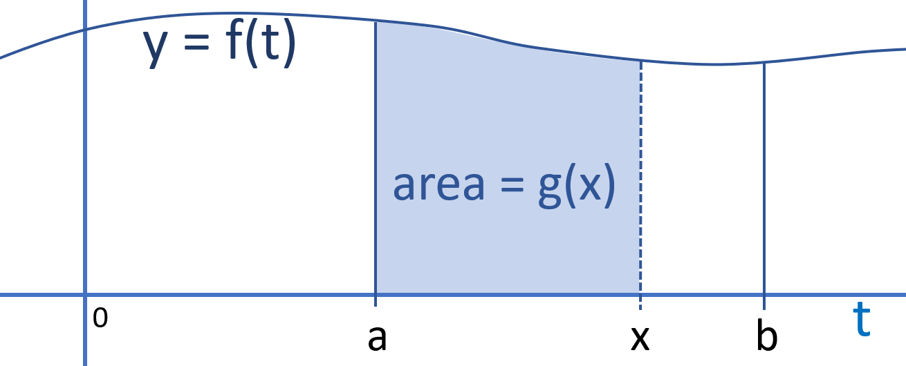
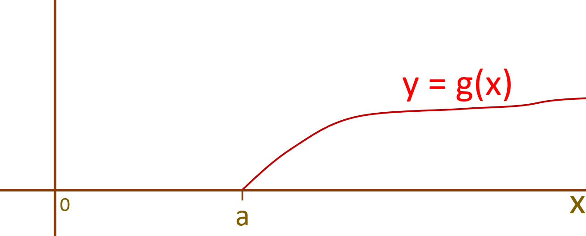
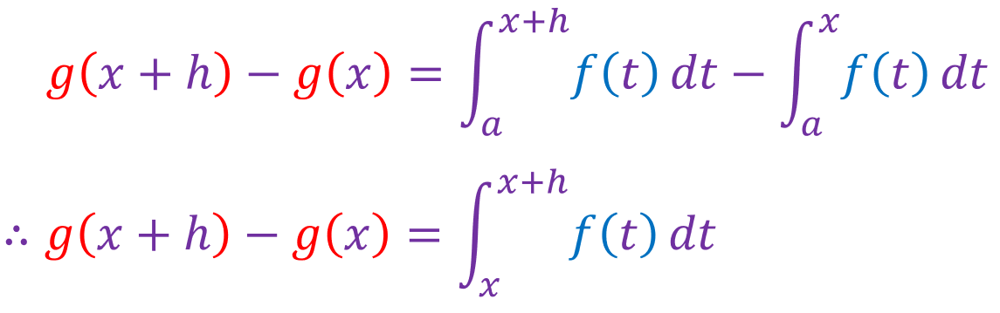
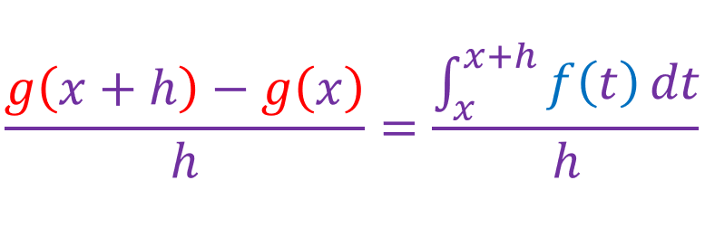
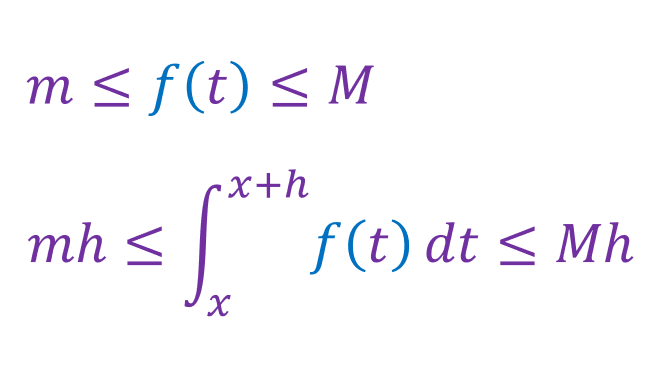
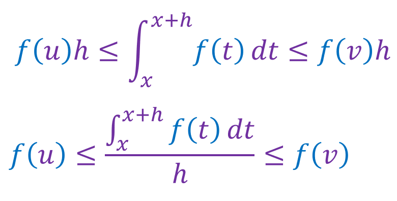
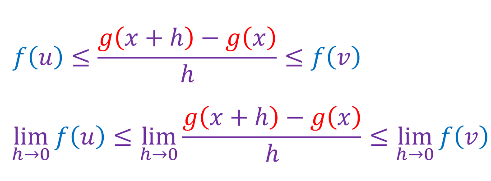
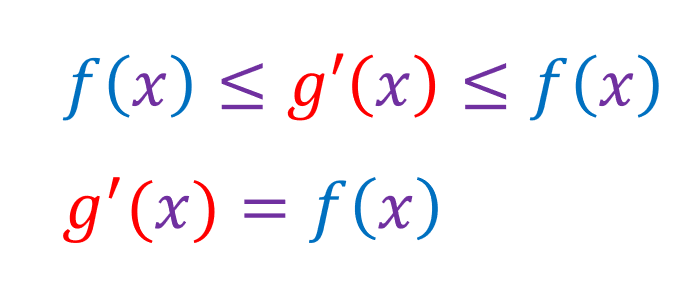
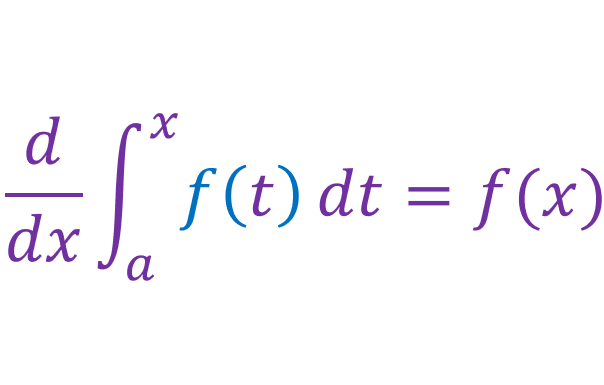

Lets say the function f is continous on [a,b], and lets say function g is defined by:

The function g(x) represents the area under the graph of f(x) from a to x, where x varies between a and b:
The graph of g(x) would look something like this:
By definition of g(x):
If h ≠ 0:
Lets define m as the absolute minimun of f(t) and M as the absolute maximum of f(t) on the interval [x, x+h]:
Lets say m = f(u) and lets say M = f(v):
We can write this as:
Both u and v are in the interval [x, x+h], if h->0 then both u and v will approach x. Therefore:
Using Leibniz notation:
This is the fundamental theorem of calculus (part 1).